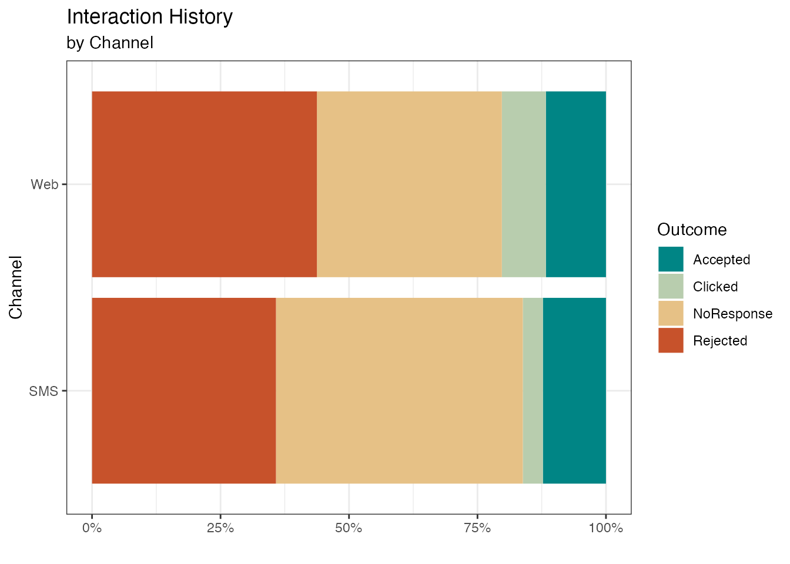
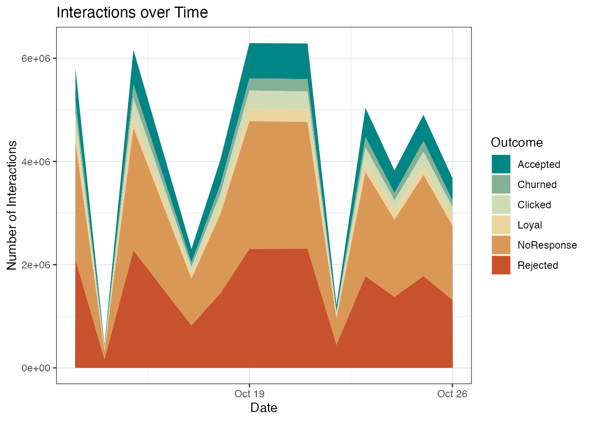
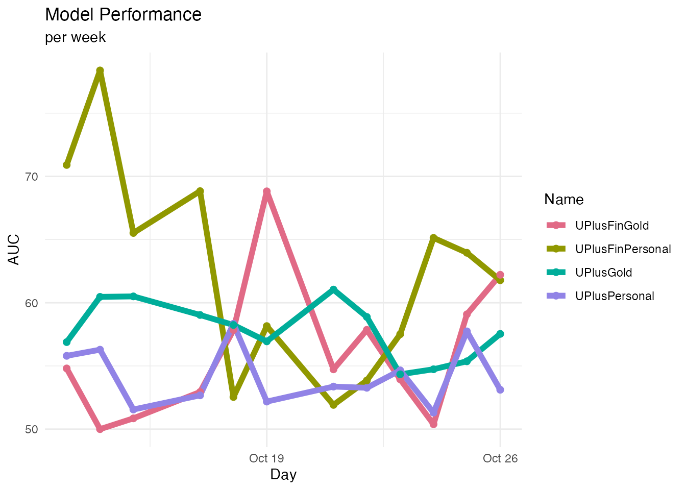

ih-reporting.RmdA few simple reports on IH.
Input is a small IH export included in pdstools, you can point to any Pega export and read with readDSExport.
library(pdstools)
library(ggplot2)
library(scales)
library(tidyverse)
library(data.table)
library(colorspace)
library(lubridate)
theme_set(theme_minimal())
data(ihsampledata)
#ihsampledata <- readDSExport("Data-pxStrategyResult_pxInteractionHistory", "~/Downloads"
pdstools::standardizeFieldCasing(ihsampledata)
# Both "Accept" and "Accepted" occur as labels - fix that for the reporting
ihsampledata[Outcome == "Accept", Outcome := "Accepted"]This shows how the distribution of responses is different per channel.
ggplot(ihsampledata[Channel != ""], aes(Channel, fill=Outcome)) +
geom_bar(position = position_fill()) +
theme_bw() +
scale_fill_discrete_divergingx() +
scale_y_continuous(labels = scales::percent_format()) +
coord_flip() + ylab("") +
ggtitle("Interaction History", subtitle = "by Channel") + xlab("Channel") # Number of interactions over time
This shows the total number of interactions split by type of response, per day. Note the additional outcomes “Churned” and “Loyal” here, which are independent of Channel and have been the result of responses to Customer level models, not to channel specific propensity models.
ihsampledata[, Day := as_date(fromPRPCDateTime(OutcomeTime))]
ihsampledata_by_date <- ihsampledata[, .N, by=c("Outcome", "Day")]
ggplot(ihsampledata_by_date, aes(Day, N*1000, fill=Outcome)) +
geom_area() +
theme_bw() +
scale_fill_discrete_divergingx() +
ggtitle("Interactions over Time") + xlab("Date") + ylab("Number of Interactions")
The actual model performance can easily be calculated from the data in IH, since we have both the propensities (from the models) and the actual outcomes.
ihsampledata[, Week := week(fromPRPCDateTime(OutcomeTime))]
performance <- ihsampledata[Outcome %in% c("Accept", "Accepted", "Rejected"),
list(AUC = 100*auc_from_probs(Outcome %in% c("Accept", "Accepted"), Propensity),
n = .N,
Day2 = first(Day)),
by=c("Day", "Name", "Group", "Issue")]
ggplot(performance, aes(Day, AUC, color=Name)) +
# geom_smooth(size=2,se=F,method = "loess", span=0.5) +
geom_line(size=2) +
geom_point(size=2) + theme_minimal() +
scale_color_discrete_qualitative() +
scale_y_continuous(limits=c(50,NA)) +
ggtitle("Model Performance", subtitle = "per week")
#> Warning: Using `size` aesthetic for lines was deprecated in ggplot2 3.4.0.
#> ℹ Please use `linewidth` instead.
#> This warning is displayed once every 8 hours.
#> Call `lifecycle::last_lifecycle_warnings()` to see where this warning was
#> generated.